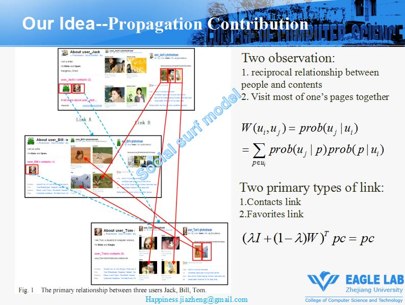

About Me
I obtained my Master's and Bachelor's degrees from Zhejiang University in 2011 and 2008. I participated in the Robocup competition in 2006, and won the first prize in the RoboCup Soccer ¨C Simulation 2D League. I also developed the first visual perception system for ZJUDancer,which won the 1nd Place of RoboCup China Open 2007 in Soccer Humanoid small size.
I have rich experience in robotics research and development. In 2016 I founded the Hangzhou Brain of Things Co., Ltd, and designed robot girlfriend Yingying. This project was reported by many media, such as the Guardian, Qianjiang Evening News.
Robots will reshape human society, who will reshape the robot? Like many AI researchers, I have a dream of letting robots into thousands of households. I would like to devote myself to this long-term goal.
Now I am planning to apply for further study and research opportunities in academic institutions.
Please contact me if you would like to offer me an opportunity.
Publications
- (Keynote Speech) Jiajia Zheng, ¡°My wife the robot¡±, in 5th International Congress on Love&Sex with Robots, December 7-8, 2020, Online
- (Conference Paper) Jiajia Zheng, Wei Chen, Lijun Zhang, Jiajun Bu, Chun Chen, ¡°A Metric for Measuring Members' Contribution to Information Propagation in Social Network Sites¡±, in 12th International Asia-Pacific Web Conference, 6-8 April, 2010, Busan, Korea
- (Graduate thesis)Friends Recommendation Based on Graph Ranking on Social Network Site, graduate thesis, 2011
- (Undergraduate thesis)Design and Implementation of a General Platform for Mobile Robots, undergraduate thesis, 2008
- (Software Copyright)Robot Companion, Registration Number: 2019SRE013410
- (Software Copyright)Eagle Robot System Control Software, Registration Number: 2009SR00750
Projects
|
Keynote Speech: My wife the robot
Jiajia Zheng
LSR2020
PDF/video
|
|
|
The robot girlfriend Yingying
Founder Jiajia Zheng
Hangzhou Brain of Things Technology Co., Ltd. aims to develop Cloud Robotics platform. In 2017, this project was reported by many media, such as the Guardian, the BBC and Qianjiang Evening News.
|
|
 |
A Metric for Measuring Members' Contribution to Information Propagation in Social Network Sites
Jiajia Zheng,Wei Chen,Lijun Zhang, JiaJun Bu, Chun Chen
APWeb2010 (Oral)
PDF/PPT
|
|
|
Design and Implementation of a General Platform for Mobile Robots
Jiajia Zheng
Undergraduate thesis 2008
PDF/PPT
|
|
|
RoboCupSoccer Humanoid KidSize¨CZJUDancer
ZJUDancer won the first Place in the 2007 China Open RoboCup competition.
Jiajia Zheng developed the first visual perception system for ZJUDancer. The vision system captures the information on the football field through the monocular camera, analyzes and identifies the key objects such as the ball, goal, robot and pillar on the field. Based on the visual perception information, the robot adopts the strategies of shooting, passing and dribbling to kick the ball into the opponent¡¯s goal to win the score.
video
|
|
|
RoboCupSoccer Simulation 2D ¨CZJUBase
ZJUBase won the second place in the 2006 China Open RoboCup competition.
Jiajia Zheng I wrote the codes of ZJUBase with my teammates. I focused on developing the ZJUBase agentes¡¯s abilities of conforming to the soccer rules. For example, how to take corner kick.
video
|
|
Employment
- 2021.06 - 2022.08: Robotic Software Engineer, Zhejiang Jinhua Jinchuang intelligence Manufacturing Research Institute Co., Ltd.
- 2016.11 - 2021.06: Founder, Hangzhou Brain of Things Technology Co., Ltd.
- 2014.12 - 2017.01: Robotic Software Engineer, Zhejiang Guozi Robotics Co., Ltd.
- 2011.05 - 2012.10: Software Engineer, HuaWei technologies Co., Ltd.
Education
- 2008.09 - 2011.03: M.S. in College of Computer Science and Technology, Zhejiang University
- 2004.09 - 2008.07: B.E. in College of Control Science and Engineering, Zhejiang University
Awards
- 2011: Award for 2011 Excellent postgraduate student in Zhejiang University
- 2009-2010: First-class Award for graduate student in Zhejiang University
- 2009-2010: Honor of Graduate of Merit/Triple A graduate in Zhejiang University
- 2008: Award for Excellent undergraduate thesis in Zhejiang University
- 2007: Second prize of 2007 National Undergraduate Electronic Design Competition
- 2006-2007: First-class scholarship of undergraduate research and innovation in Zhejiang University
- 2005-2006: Second-class scholarship of undergraduate research and innovation in Zhejiang University
- 2006: 2nd Place of RoboCup China Open 2006 in Soccer Simulation League 2D
- 2006: First prize of the first "SUPCON CUP" robot soccer competition in Zhejiang University